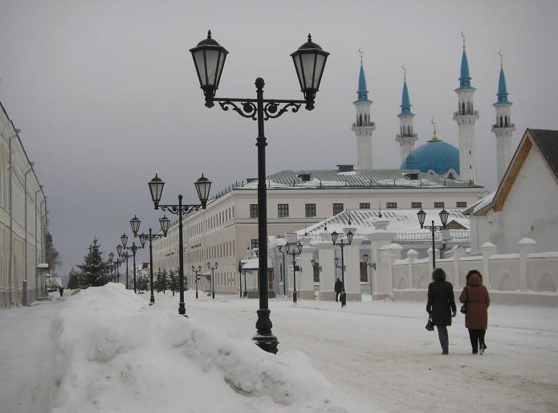

Казань — город с умеренно-континентальным климатом. Здесь не редки сильные морозы зимой и палящий зной летом. Температурный максимум зафиксирован в 2010 году — в тени +39, а минимум в 1942 году (-46 градусов). Средняя температура зимой -9-12, летом + 17-20. С конца марта по середину октября в основном устанавливается устойчивая плюсовая температура, с конца октября по середину марта — устойчивая минусовая.
Как и большинство больших городов, Казань имеет загрязненный воздух и воду в окружающих и протекающих по ее территории реках — Казанке и Волге, а также озерах, расположенных в городской черте (верхнее, среднее и нижнее озеро Кабан). Однако город является единственным в России мегаполисом, который полностью перерабатывает свои отходы. Казань не входит в число российских городов, имеющих крайне неблагополучную экологическую обстановку.
